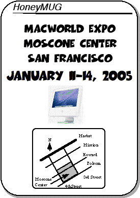

Nov 2004
MacWorld Expo 2005 Meeting Notice
01/11/04 00:00

2004 MUG highlights
Dick, Mike, Tracy, Alex attended MWSF 2004
We lost one of our favorite members this year. Roger has passed on to a better place, a place where Macs actually do rule.
Apple continued to kick butt with their iPod and iTunes music platforms. Apple stock reaches a four-year high. Apple updates the entire Mac product line this year - the iBook and eMac break the sub-$1000 price barrier. Apple announced the G5 iMac at the end of August. Apple purchases by HoneyMUG members:
- iPod - Mike and Ron (iPod mini)
- Power Mac G5 - Mike (dual 2.0GHz), Alex (dual 1.8GHz - DOA, returned to Apple in disgust)
- iBook G4 - Matt
- iMac G5 - Kevin (1.8GHz 20"), Alex (1.8GHz 17")
The third annual MacFair was held in Cerritos College in November. Only Alex attended this event.
Happy Holidays to all,
Alex
The Meeting
As usual, we will be having our regular lunch/dinner get-togethers at Macworld. The meetings will occur during all days of this years' show.The meeting times are
* January 11, 2005 between 1:00- 1:15pm
* January 12, 2005 between 12:00-12:15pm
* January 13, 2005 between 12:00-12:15pm
* January 14, 2005 between 12:00-12:15pm
If you get lost, give ASACMUG a call:
Alex Morando seven-one-four--four-eight-eight--fifty-four-ninety-three
Mike Quan three-one-zero--four-six-three-twenty-seven-oh-eight